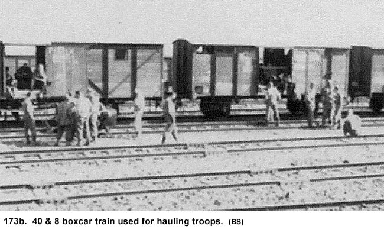
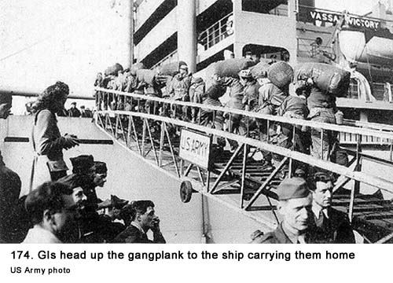
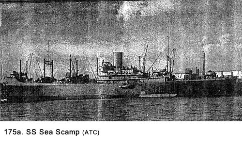
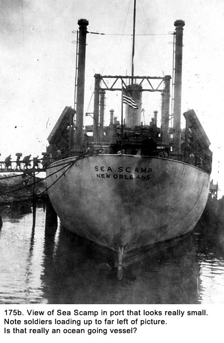
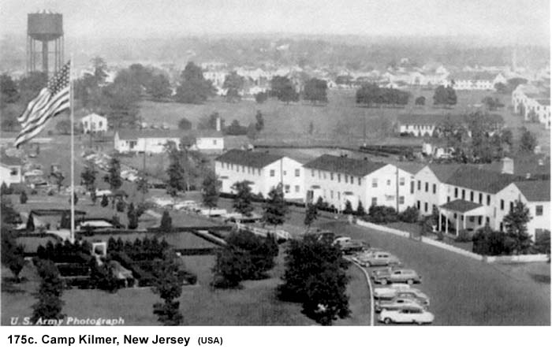
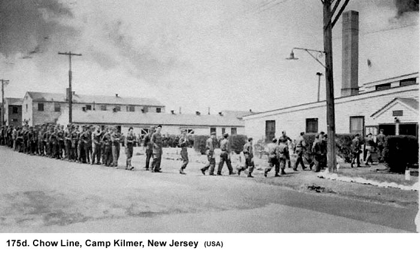
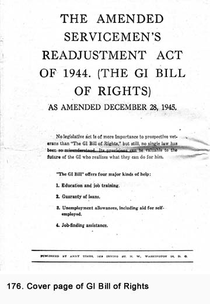

|
Table of Contents < - - - return Chapter 30 < - - - next
World War II Story by Robert F. Gallagher Chapter 29 - Back to England and the Trip Home History is the version of past events that
people have decided to agree upon. _______________________ The Army had set up technical schools to keep the GIs busy while they were still in Europe. Joe Bernal and I signed up for a course in aircraft engine maintenance being held in Blackpool, England. Neither of us had any special interest in the subject, but we figured it was a good way to see Britain again. After being accepted, we took a train to the port of Le Havre, where we first landed in Europe. There, we were to catch a boat over to England. The train ride was absolutely the worst ride of my life. Because the Allied air forces had shot up most of the trains in Europe, they were resorting to using anything that was available for service. We were assigned to a World War I era train, with cars that were called forty and eight's (quarante hommes et huit cheveaux). This meant it was designed to carry forty troops and eight horses, or mules, during that war (See Fig. 173b). The windows were small slits along the sides.  There were no electric lights and the tiny windows let in a minimum amount of light. For the early part of the trip, we left the boxcar-like doors slightly open for light even though it was the middle of winter. There was no heat, so we finally closed the doors and sat in the semi-darkness. We sat on the floor with our backs against the wall and the position soon became very uncomfortable. Some men were sprawled out on the floor, using their duffel bags for pillows. Some GIs at one end of our car started a fire to keep warm and later had to go around to find men who had canteens of drinking water to douse the burning floor so the car did not burn down. The train stopped for some reason about midway in the trip so Joe and I got out and walked back to a boxcar, several cars behind us, where some GIs were riding. They told us they had a potbelly stove going in their car so we climbed in and spent the rest of the trip there huddled around it. When we arrived in Le Havre, we pulled into a railroad yard, and someone opened one of the car doors. Spread out in front of us as far as we could see were thousands of German prisoners of war all chattering in German. They had just arrived from America by boat and were being repatriated to their native country. I wondered if they knew what they were getting into in that land of total annihilation. While we were not afraid of them, we felt quite uncomfortable because of their great number. They all looked so healthy and well fed, not at all like some of the American prisoners of war we had seen who had suffered under German imprisonment. They began to hit us up for cigarettes, so we closed the door and locked it until we pulled into the station. We took a boat across the channel and then a train to Blackpool, England, on the west coast. The school was named Warton American Technical School. The classroom soon became a secondary assignment. Our main objective was to see the sights of England and Scotland, so we spent most of our time planning a trip or recovering from one. No one in the class ever intended to be an aircraft mechanic. Even if they did, it would have been tough competing for jobs against the tens of thousands of GIs who had just spent the last three or four years at that occupation in the Army Air Force. I really felt sorry for our civilian instructor at the school, who was trying to teach something to a bunch of students who, he knew, were not ever going to benefit from his course and could care less about the subject. The resort town of Blackpool had many pubs and other interesting places to visit. It was a good location to spend our weekday evenings. There was a large dance pavilion, although it seemed to cater more to an older crowd of the local people. Every Friday at noon, we would take off for Edinburgh, Glasgow, or London. One of the Army rumors we had heard before leaving Antwerp was that the girls in England were making a last and desperate effort to snag, like in marry, a GI. The rumor said many of the girls who had married GIs earlier were writing home to tell the ones remaining how great America was. That, plus the fact the population of GIs in England had greatly thinned out, made the girls desperate. Supposedly, they would bump into GIs on the street, buy them drinks in the pub, and go to other desperate measures to get acquainted. Like most other Army rumors, this one proved to be wrong. Despite the rumor, we had a great time in England. At the end of the course, we got our grades. Most of them were good which was like getting a D in a civilian school. The Army had about ten grades, with most of them being Excellent, Superior, Very Superior, etc. Nobody ever flunks a course in the Army but we came close to it. We all tore up our diplomas. When Joe and I got back to Antwerp, we realized we had miscalculated determining when we would be eligible to return home. Many of the men we had been with throughout our time in the service had already been shipped back to the States (See Fig. 174). New men we had never met were being transferred into our unit, which was now known as the 797th Military Police Battalion. We continued to do MP duty while we made every effort to get our names on top of the list of those being returned to the States.  One evening when I had just returned from a movie, I entered the long narrow room in the converted diamond factory where I bunked with about forty other men. The place was in bedlam as everyone was shouting at one individual. You could not have stirred up the occupants greater if you had unleashed a Bengal Tiger in the room. "You dirty bastard. You didn't." "That's taking revenge too far." "If he finds out about this, you had better walk around back home with a loaded gun all the rest of your life." "I've heard about bad guys but you're the worst." "Tell me you're kidding." One man was pounding his fist against the wall. "You didn't. Tell me you didn't" These were just a few of the things being said in a loud and forceful manner. Despite all of the negative rhetoric, there was something missing from the disparaging comments: there was no malice in them. It was as if they were saying, "You've done something that I wouldn't have done in a million years, but after I recover from this initial shock, it will be easier to comprehend." When I got filled in on the details, I understood what all of the commotion was about. It seems as though the battery clerk had gone on furlough and the GI being chastised took his place for a week. Part of the clerk's duty was to pass out the mail from home and to get letters from the men in the battery over to the Army post office. The permanent clerk had shown the new man a stack of mail on top of the mail bin that was to have special handling. It contained letters from women in England and Continental Europe that had been sent to married men already on their way back to the States. The assumption was there had been some kind of romance between them. Under no circumstances was it to be forward on to the men's homes, and the temporary clerk was to keep his eyes out for anything new. The permanent clerk had been keeping the letters as an easy way to identify future mail of the same type. It seems the temporary clerk had a special grudge against an officer who had caught him fraternizing with a German girl. In this case, the man had lost the sergeant stripes he had worked hard to get. We heard he had been brooding about it for many months. He took the letters on the bin from some girl in England that were addressed to this officer, put them in an envelope, addressed it to the officer's wife, and then took it over to the Camp Tophat post office to mail. This GI was single, and he made a point of telling us he did not understand why it was all right for a married man to be involved with another woman while a single man like him could not even talk with a single woman. Despite the fact the no fraternization law was Army policy, he tried to convince us, it was a moral issue. Most of us were not convinced of the man's moral view and considered his act plain old revenge. The GI took a lot of flak that day, and he became the center of a story told throughout what was left of our battalion. Men would point him out to their friends after they explained what he did with the comment, "That's him." There was a strong push by the Army to get men to reenlist. Evidently, so many were being discharged the government was afraid of not having enough left to handle the occupation of conquered countries. Also, there were rumblings from Russia that made government and military leaders uncomfortable, and they wanted to have a sizable armed force available to oppose the Russians. For a fifteen-month reenlistment, we would receive a three-month furlough at home, a three hundred dollar cash bonus, and a guarantee we would hold our existing rank and never be less than a private first class. Some men took them up on it, but I had no interest in the plan. I could not wait to get out of the Army. Even though many men from our battalion were leaving, there was no remorse separating from fellows I ate, slept, traveled, fought, marched, laughed, complained, and labored with for the past two and a half years. Although some of them could now be considered good friends, we had always known there was something temporary about the friendship. Even though I knew I would probably never see most of them again, my thoughts were not about leaving these friends. I was thinking about getting home and seeing my family, relatives, and longtime friends I had known before the war. In this unusual situation, it was not the leaving that occupied my mind but, rather, the anticipation of what was to come in the future with renewed acquaintances. The Trip Back To The States I pulled a little more MP duty before I got the word in late February, 1946, that I was going home. While I had come over on one of the world's largest passenger ships, I went back on one that was less than one-half its size. The name of the ship was SS Sea Scamp (See Figs. 175a and 175b), and it was built in the United States by Ingalls Ship Building. It was known by the United States Maritime Commission as a C3 Type ship. Its statistics were sixteen-thousand tons, four-hundred-sixty-five feet long, seventy feet wide, with a top speed of eighteen knots. We commented with a name like Sea Scamp, they must have produced so many ships during the war they were scraping the bottom of the barrel for a name. While on board, we called it Sea Tramp.   On the return trip, we had a little bit but not a lot more room in our quarters, but, of more importance, we had American food instead of lousy British chow we'd had on our way over. There were no blackout conditions like we had on the way over, and we got a lot of time up on deck. The morale on ship was extremely high, and there was always someone to make us laugh. Most of the jokes or outlandish stories were at the expense of the Army. There were two unusual incidents on board that caused quite a bit of commotion. First, they discovered a GI had smuggled a dog on board. It did not seem to be such a big thing to us but there was some Army captain who was really making an issue of it. He was threatening to have the ship returned to Le Havre to discharge the GI and the dog. We never did go back, and we assumed the ship's captain did not go along with the idea. A few days later, they discovered a small boy who also had been smuggled on board in a duffel bag. He was dressed in a tailor-made American lieutenant's uniform. They came around and took up a collection for him, and that's the last we heard about him. The discoveries produced a lot of remarks by the men on board. "What next: a German fraulein?" someone asked. As on the trip over to England, there were some black soldiers on board with us, but we were still not mixed with them in our living quarters. The armed services would not become integrated for a few more years. However, we did mingle together up on deck and we met several men whom we got to know quite well. They seemed to be able to describe army life better than anyone else and their stories were the funniest ever. Two of them had been attached to a Quartermaster unit and insisted that they were in the 444th Mess-Kit Repair Battalion. They told of all the trials this unit encountered during the war and of how only the paratroopers had a harder time of it. We all knew it was made up but it produced a lot of laughs as they elaborated on their experiences. We hit a storm mid ocean, and the small ship bobbed around like a cork. There were heavy swells, and at times the ocean seemed to be thirty or forty feet higher than the ship's deck. The crew finally closed up all the hatches to our sleeping quarters to keep us below deck. We were given rations to eat because we could not get to the mess without going outside. Fortunately, the storm only lasted about twenty-four hours and most of us rode through it with only minor seasickness. Some of the GIs on board with us were making a big thing about how bad the storm was. Those of us who rode through the extended storm aboard the Nieuw Amsterdam on the trip overseas told them they hadn't seen anything. Arriving In New York City We arrived in New York Harbor early in the morning on March 4th. This time, I saw the Statue of Liberty and the breathtaking view of the skyline as we sailed by. Some of the men who had started their military service in New York pointed out landmarks. To all of us, it meant a return to our native country and a step closer to our homes. Smiles shone from everyone; I had never seen so many happy GIs in one place. When we arrived at our dock there was no celebration or welcoming committee to greet us. The war had been over long enough all cheering for returning soldiers had long faded away. Walking off the ship was a lot easier than it was on our trip over to Europe because the load we carried was so much less. We had turned in our rifle, gas mask, helmet, gun belt, bayonet, backpack and many other items in Antwerp so the load we carried down the gangplank consisted of just one duffel bag. A couple of the men got down and kissed the ground. They had seen other GIs do that in newsreels, and they knew it would get a big laugh. We took a train to Camp Kilmer in New Jersey for processing (See Figs. 175c & 175d).   For lunch they served us steak, and it was a big hit for everyone. That afternoon we walked over to the large PX there. It was full of all the little luxuries that we had not had while in Europe. What a thrill it was to just wander through the aisles looking at all the great things that were available. Le Claire commented, "Welcome back to civilization!" I bought copies of Life, Time and Readers Digest just to get up to date on what was happening in the States. Next I went over and had a large hot-fudge sundae. One of the new things we had not seen before that caught our attention was the ballpoint pen. It had been recently introduced for the first time and was displayed in the PX in very ornate packaging. The price was eighteen dollars each. This was a sizable sum of money. I watched a GI try one out at the counter. He scratched it on a sheet of paper at least ten times until it finally made a mark, and then he bought it. While I would not have bought that pen, we were all eager to buy things that were part of the American culture because we were so glad to be back in the States. We treated ourselves to the point of overindulgence on Cokes, candy bars, ice cream, and even the PX's 3-2 beer, which now tasted great. We wanted to restore that feeling of participating in the routine of buying and enjoying the things we had missed while in Europe in any way we could. We only stayed in New York for a few days before taking a train to Chicago. We arrived at Camp Grant, northwest of Chicago, where I started my Army career. It was now called a Separation Center. The first time we heard that name, one of the GIs I was with said, "They mean a Freedom Center, don't they?" The same sterile barracks and surroundings were there but they did not seem all that unusual to us this time. We had seen many places that looked the same and others that were a lot worse. On our first trip there, nearly three years earlier, we were filled with nervous anticipation of what we were getting in to. This time it was nervous anticipation of a completely different kind. We distrusted the Army and there were still some feelings of doubt that would not be gone until we had our discharge papers in hand and we were outside the camp gate. They explained to us about the GI Bill of Rights (See Fig.176) and other benefits that would be available to us as veterans. The ten-thousand dollar life insurance policy we had been given at our induction could be converted into a civilian policy that would now require a payment of six dollars and fifty cents per month. I was given one-hundred dollars in cash as the first installment of the three-hundred dollars in mustering out pay that I would receive. The balance of the mustering out money would be mailed to me over the next several months. I was also paid four dollars and forty cents in travel pay. In keeping with the Army's policy of not telling details, I had to assume this travel pay was money to cover the cost of transportation from the camp to my home. The lack of particulars did not keep me from accepting the piddling amount. Also, I received back pay for the month of February and for the seventeen days of March, which brought me up to date. This new infusion of cash made me feel rich.  Just like the Army did in Antwerp, they tried to get us to sign up again for another hitch. The new package was to promote all members of an antiaircraft crew one rank. That was their way of paying them more money in an effort to encourage reenlistment. I thought those who signed up were paying quite a price for just one more stripe on their arm and a little bit more money. It was surprising to see some of the fellows I knew reenlist, including my buddy Jim Grimes. Was this the same guy who sat on his bunk and damned the Army on numerous occasions along with the rest of us? Had he and the rest of them forgotten so soon? For some reason a statement made by a GI from Brooklyn, New York, when we were in Europe, "So bad I don't need a job," kept popping up in my mind. We turned in all of our army clothing except for one uniform to be worn home. Many of the men had army watches, compasses, etc., which they did a good job of hiding. We were asked individually, "Do you have any article that belongs to the United States Government?" You knew when they referred to the Army as the United States Government, they meant business, but nothing except a thorough search would have produced items the men wanted to keep. It seemed everyone I knew had an army watch, and I wondered where I had missed the boat. Discharged !! Finally, on March 17, 1946, I was honorably discharged from the Army after serving for two years and nine months. After having my last lunch in a mess hall, I walked out of the camp with several of my friends. We passed a couple of officers heading into the camp. We made a point of making eye contact with them and our hands stayed stiff at our sides. "Boy! That felt good," I commented. There was a bus leaving for Chicago late in the afternoon, but we could not wait to get away from anything relating to the Army so several of us hired a taxi that took us into downtown Chicago. My parents came and picked me up there and drove me home. It was a very happy day.
Chapter 30 < - - - next Table of Contents < - - - return _________________________ Footnotes and Source of Photographs. Copyright, Robert F. Gallagher, 1999 - 2015, all rights reserved on all images and content.
|